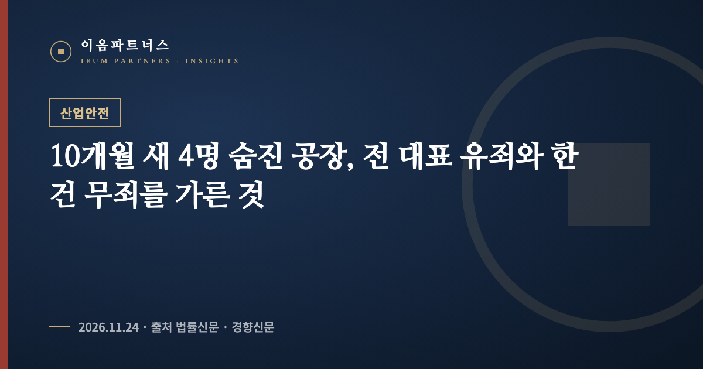

10개월 새 4명 숨진 공장, 전 대표 유죄와 한 건 무죄를 가른 것

전북 군산의 한 특수강 제조업체 공장에서 10개월 사이 사고 3건으로 노동자 4명이 숨졌고, 2026년 11월 24일 1심 법원은 전 대표이사에게 징역 2년·집행유예 3년, 회사에 벌금 2억 5,000만 원을 선고했습니다. 다만 사고 1건은 전 대표의 의무 위반으로 보기 어렵다며 무죄로 봤습니다. 대표님 회사는 안전 절차를 갖추고 지켜 왔다는 기록을 내놓을 수 있습니까? 이 글에서는 판결 내용과 유죄·무죄가 갈린 지점을 정리합니다.
이번 판결은 1심 판결이라 항소심에서 달라질 수 있습니다. 또 2024년 4월 같은 공장에서 협력업체 노동자가 숨진 사고는 이번 재판에 포함되지 않았고, 2026년 11월 19일 전 대표가 추가 기소돼 별도 재판에서 다뤄질 예정입니다(경향신문). 사고가 반복되는 현장이 걱정되신다면 카카오톡 채널 이음파트너스로 편하게 물어 주세요.
10개월 동안 어떤 사고가 있었나
| 구분 | 내용 |
|---|---|
| 2022년 5월 | 지게차에 치인 노동자 1명 사망 → 전 대표 의무 위반 인정 |
| 2022년 9월 | 철강 제품을 트럭에 싣던 노동자가 제품과 적재함 사이에 끼어 사망 → 전 대표 무죄 |
| 2023년 3월 | 연소탑을 청소하던 노동자 2명이 고열의 연소재에 화상을 입고 숨짐 → 전 대표 의무 위반 인정 |
| 2024년 4월 | 협력업체 노동자 사망 → 이번 판결 대상 아님, 추가 기소 |
전 대표는 경영책임자로서 안전보건 확보 의무를, 전 공장장은 안전보건관리책임자로서 안전조치 의무를 지키지 않은 혐의로 2025년 2월 기소됐습니다(경향신문). 기소부터 1심 선고까지 1년 9개월이 걸렸습니다.
법원은 무엇을 보고 유죄로 판단했나
재판부는 사고마다 작업계획서 작성·검토, 작업지휘자 배치, 위험 요인 예방조치 같은 기본적인 안전관리 의무가 지켜지지 않았고, 이것이 사망으로 이어졌다고 봤습니다. 같은 사업장에서 10개월 만에 4명이 숨진 것은 매우 이례적이며 구조적인 문제를 드러낸 것이라고도 했습니다. 피고인들이 반성하기보다 피해자 과실을 거론한 태도도 지적했습니다(경향신문).
유족과 합의해 유족이 처벌을 원하지 않은 점, 사고 뒤 개선 조치를 한 점은 형량을 정할 때 참작됐습니다. 그 결과 선고는 검찰이 2026년 9월 29일 구형(검찰이 법원에 요청한 형량)한 수준을 모두 밑돌았습니다.
| 구분 | 내용 |
|---|---|
| 전 대표이사 | 징역 2년·집행유예 3년(구형 징역 5년) |
| 전 공장장 | 징역 2년·집행유예 3년·벌금 100만 원(구형 징역 3년) |
| 법인 | 벌금 2억 5,000만 원(구형 벌금 5억 5,000만 원) |
| 안전관리 담당 직원 3명 | 금고 8개월·집행유예 2년 |
| 협력업체 | 숨진 노동자 소속 업체 벌금 1,000만 원, 나머지 관련 업체 등 200만~800만 원 |
무죄가 난 1건이 보여 주는 것
법원은 2022년 9월 끼임 사고에 대해서는 전 대표가 “위험성 평가 절차를 마련하는 등 안전보건 확보 의무를 위반했다고 보기 어렵다”고 판단했습니다(법률신문). 같은 회사, 같은 대표라도 사고마다 경영책임자가 의무를 이행했는지를 따로 따진다는 뜻으로 읽을 수 있습니다.
위험성평가는 작업장의 위험 요인을 찾아 평가하고 줄이는 절차입니다. 기사에 나온 범위로는 이 사고에서 어떤 자료가 판단의 근거가 됐는지까지는 확인되지 않습니다. 다만 평소에 절차를 마련하고 지켜 온 기록은 사고 뒤 대표의 의무 이행을 따질 때 살펴보는 자료가 될 수 있습니다.
대표님이 지금 확인할 것
- 지게차 운행, 상하차, 설비 청소처럼 위험한 작업마다 작업계획서를 쓰고 검토하는지, 작업지휘자를 두는지
- 위험성평가 절차가 문서로 마련돼 있고, 평가 결과와 개선 조치가 기록으로 남는지
- 한 번 사고가 났다면 같은 사업장의 다른 작업까지 위험 요인을 다시 점검했는지
- 협력업체가 우리 사업장에서 하는 작업도 안전 관리 범위에 들어 있는지
참고한 자료
- ‘노동자 5명 사망’ OOOO 전 대표…중처법 위반 1심 집행유예 — 법률신문 (2026.11.24)
- ‘10개월 새 노동자 4명 사망’ OOOO···전 대표 징역 2년·집유 3년 — 경향신문 (2026.11.24)
위험성평가와 작업계획서 관리를 함께 점검하고 싶으시다면 카카오톡 채널 이음파트너스로 편하게 문의해 주세요.
※ 이 글은 일반적인 정보 제공을 위한 것으로, 개별 사안은 세무사·노무사 등 전문가와 함께 확인하시기 바랍니다.